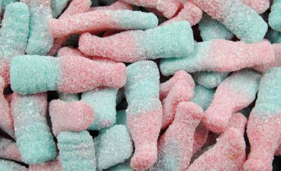

An average EU citizen eats 7 kg of candy each, every year. We Swedes love our candy a bit more though, since we eat 17 kg per person every year, in average.
This means that in one year we Swedes consume 168 300 tons of candy, wich is equal to 320 kg every minute and 5,6 kg every second, all of us together. During the Easter, Swedes eat 7 600 ton candy...
